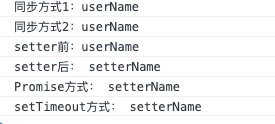

简介
在 vue 的官方文档中有一个 API 叫做 nextTick，将回调延迟到下次 DOM 更新循环之后执行。在修改数据之后立即使用这个方法，获取更新后的 DOM。
语法
1 | vm.$nextTick([callback]); |
- 参数：
1 | { |
用法
放在Vue.nextTick()回调函数中的执行的应该是涉及 DOM操作的 JavaScript 代码。
Vue 的响应式原理：在 data 选项里所有属性都会被watcher监控，当修改了data的某一个值，并不会立即反映到视图中。Vue 会将我们对data的更改放到watcher的一个队列中（异步），只有在当前任务空闲时才会去执行watcher队列任务。这就有一个延迟时间，所以对 dom 的操作要放在$nextTick中来操作，才能获取到最新的dom。
nextTick 是 Vue 的一个核心实现，如果还不了解 js 运行机制，可以看一下另一篇文章js 运行机制，这里就不多赘述了。
在浏览器环境中常见的 macro task 和 micro task 如下：
macro task：
setTimeout、setTimeIntervalMessageChannelpostMessagesetImmediaterequestAnimationFrameI/OUI 渲染a
micro task：
- MutationObsever
- Promise.then
- process.nextTick
vue 源码解析
在派发更新 Watcher里面有用到nextTick(flushScheduerQueue)，其实就是vue对派发更新的一个优化。下面直接看源码，在 src/core/util/next-tick.js 中：
1 | // nextTick 中执行回调函数的原因是保证在同一个 tick 内多次执行 nextTick，不会开启多个异步任务，而把这些异步任务都压成一个同步任务，在下一个 tick 执行完毕。 |
nextTick这就是我们在上一节执行 nextTick(flushSchedulerQueue) 所用到的函数。它的逻辑也很简单，把传入的回调函数 cb 压入 callbacks 数组，最后一次性地根据 useMacroTask 条件执行 macroTimerFunc 或者是 microTimerFunc，而它们都会在下一个 tick 执行 flushCallbacks。flushCallbacks 这个方法就是挨个同步的去执行callbacks中的回调函数，callbacks中的回调函数是在调用 nextTick 的时候添加进去的；
这里使用 callbacks 而不是直接在 nextTick 中执行回调函数的原因是保证在同一个 tick 内多次执行 nextTick，不会开启多个异步任务，而把这些异步任务都压成一个同步任务，在下一个 tick 执行完毕。
注意这里有个比较难理解的地方，第一次调用 nextTick 的时候 pending 为false。
此时已经push到浏览器event loop中一个宏任务或微任务的task，如果在没有flush掉的情况下继续往callbacks里面添加。
那么在执行这个占位queue的时候会执行之后添加的回调，所以macroTimerFunc、microTimerFunc 相当于task queue的占位。
以后 pending 为true则继续往占位queue里面添加，event loop轮到这个task queue的时候将一并执行。
执行 flushCallbacks 时 pending 置false，允许下一轮执行 nextTick 时往event loop占位。
macroTimerFunc、microTimerFuncnext-tick.js 申明了 microTimerFunc 和 macroTimerFunc 2 个变量，它们分别对应的是 micro task 的函数和 macro task 的函数。对于 macro task 的实现，优先检测是否支持原生 setImmediate，这是一个高版本 IE 和 Edge才支持的特性，不支持的话再去检测是否支持原生的 MessageChannel，如果也不支持的话就会降级为 setTimeout 0；而对于 micro task 的实现，则检测浏览器是否原生支持 Promise，不支持的话直接指向 macro task 的实现。
nextTick 实现
- 首先
nextTick把传入的cb回调函数用try-catch包裹后放在一个匿名函数中推入callbacks数组中。
这么做是因为防止单个cb如果执行错误不至于让整个JS 线程挂掉。
每个 cb 都包裹是防止这些回调函数如果执行错误不会相互影响，比如前一个抛错了后一个仍然可以执行。 - 然后检查
pending状态，这个跟之前介绍的queueWatcher中的waiting是一个意思。
它是一个标记位，一开始是false在进入macroTimerFunc、microTimerFunc方法前被置为true。因此下次调用nextTick就不会进入macroTimerFunc、microTimerFunc方法。
这两个方法中会在下一个macro/micro tick时候flushCallbacks异步的去执行callbacks队列中收集的任务，而flushCallbacks方法在执行一开始会把pending置false。
因此下一次调用nextTick时候又能开启新一轮的macroTimerFunc、microTimerFunc，这样就形成了 vue 中的event loop。 - 最后检查是否传入了
cb。因为nextTick还支持 Promise 化的调用：nextTick().then(() => {})。所以如果没有传入cb就直接return了一个Promise实例，并且把resolve传递给_resolve。这样后者执行的时候就跳到我们调用的时候传递进 then 的方法中。
示例
代码如下：
1 | <template> |
执行结果如下图所示：

- 同步方式： 当把
data中的name修改之后，此时会触发name的setter中的dep.notify通知依赖本data的render watcher去update，update会把flushSchedulerQueue函数传递给nextTick，render watcher在flushSchedulerQueue函数运行时watcher.run再走diff -> patch那一套重渲染re-render视图，这个过程中会重新依赖收集，这个过程是异步的；所以当我们直接修改了name之后打印，这时异步的改动还没有被patch到视图上，所以获取视图上的 DOM 元素还是原来的内容。 - setter 前：
setter前为什么还打印原来的是原来内容呢，是因为nextTick在被调用的时候把回调挨个push进callbacks数组，之后执行的时候也是 for 循环出来挨个执行，所以是类似于队列这样一个概念，先入先出；在修改name之后，触发把render watcher填入schedulerQueue队列并把他的执行函数flushSchedulerQueue传递给nextTick，此时callbacks队列中已经有了setter前函数 了，因为这个cb是在setter前函数 之后被push进callbacks队列的，那么先入先出的执行callbacks中回调的时候先执行setter前函数，这时并未执行render watcher的watcher.run，所以打印 DOM 元素仍然是原来的内容。 - setter 后：
setter后这时已经执行完flushSchedulerQueue，这时render watcher已经把改动patch到视图上，所以此时获取 DOM 是改过之后的内容。 - Promise 方式： 相当于
Promise.then的方式执行这个函数，此时 DOM 已经更改。 - setTimeout 方式： 最后执行
macro task的任务，此时 DOM 已经更改。
注意，在执行 setter前函数 这个异步任务之前，同步的代码已经执行完毕。异步的任务都还未执行，所有的 $nextTick 函数也执行完毕。所有回调都被push进了callbacks队列中等待执行，所以在setter前函数执行的时候。此时callbacks队列是这样的：
1 | [setter前函数, flushSchedulerQueue, setter后函数, Promise方式函数]; |
它是一个micro task队列，执行完毕之后执行macro task setTimeout，所以打印出上面的结果。
总结
nextTick是把要执行的任务推入到一个队列中，在下一个tick同步执行- 数据改变后触发渲染
watcher的update，但是watchers的flush是在nextTick后，所以重新渲染是异步的